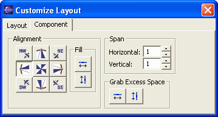
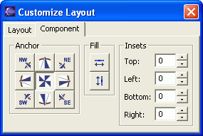
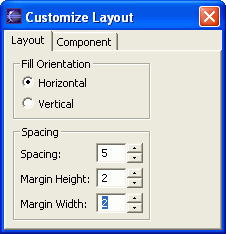

In the visual editor for Java, you can use the Customize Layout window to modify layout settings for the currently selected container and UI component.
Your Java class must include a container, such as JFrame, JPanel,
or Shell, that allows for a layout manager to be set.
Some layout effects can be achieved by visually dropping, dragging,
and resizing UI components in the Design view. The visual editor includes
the Customize Layout window to help you further refine and work with your
layout settings.
The Customize Layout window is a non-modal dialog box that you can open and leave open, like a toolbox, while you work in the Design view. The Customize Layout window then displays relevant layout properties and settings, depending on the layout manager for the selected container or the layout manager of the selected component's container.
The Customize
Layout window includes two tabbed pages:
To open the Customize Layout window, do one of the following:- Layout - The Layout page includes options that affect the layout in general. For example, for layouts that use grids, the Layout page might have grid spacing and margin settings, or it might allow you to specify the number of columns or rows in the grid. Again, these settings vary based on the layout manager. Not all layout managers include customizable settings on the Layout page.
- Component - The Component page includes layout options for the selected component. For example, certain layout managers use grids where you can specify the alignment of a component within the grid, how many cells a component spans, or whether the component should grab excess space within its cell. Not all layout managers include settings on the Component page.
- Click the Customize Layout
 toolbar button.
toolbar button. - In the Design view, right-click a container or component, and select Customize Layout from the pop-up menu.
The Customize Layout window includes different options for different layout managers. For example, the Customize Layout manager looks like the following screen shot for SWT GridLayout:
- SWT GridLayout example:

- Swing GridBagLayout example:

- SWT FillLayout example:
